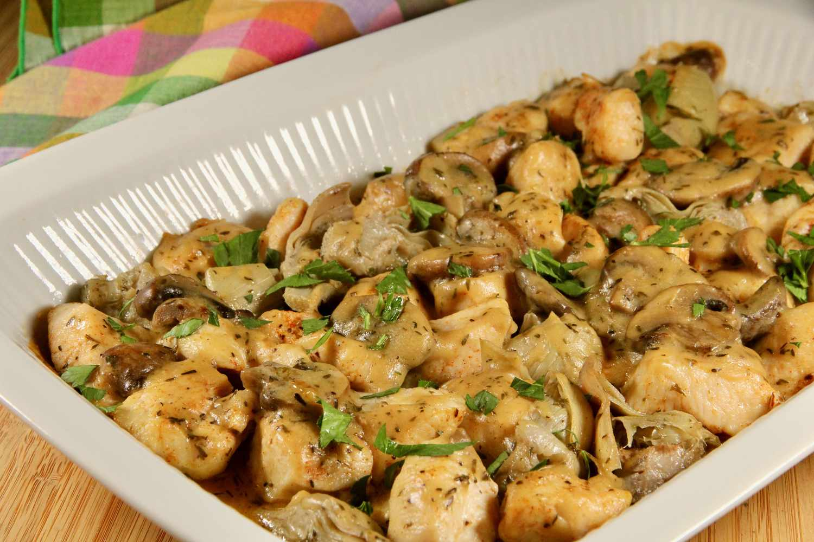

Description:
This Romantic Chicken with Artichokes and Mushrooms recipe is easy, flavorful, and aromatic. The combination of white wine, artichokes, and mushrooms make this chicken dish the perfect way to win over anyone's heart. The chicken is seasoned with salt and pepper and then browned in a large skillet with olive oil and butter. The artichokes and mushrooms are sautéed until tender, then the chicken is returned to the skillet along with the reserved artichoke liquid and white wine. The dish is simmered until the chicken is cooked through and then capers are stirred in for an added burst of flavor. Serve this dish with buttered noodles and fresh greens for a delicious and romantic meal.
Ingredients:
- 4 skinless, boneless chicken breast halves
- salt and pepper to taste
- 1 tablespoon olive oil
- 1 tablespoon butter
- 1 (14 ounce) can marinated quartered artichoke hearts, drained, liquid reserved
- 1 cup sliced fresh mushrooms
- 1 cup white wine
- 1 tablespoon capers
Steps:
- Season chicken with salt and pepper. Heat oil and butter in a large skillet over medium heat. Brown chicken in oil and butter for 5 to 7 minutes per side; remove from skillet, and set aside.
- Place artichoke hearts and mushrooms in the skillet, and saute until mushrooms are brown and tender. Return chicken to skillet, and pour in reserved artichoke liquid and wine. Reduce heat to low, and simmer for about 10 to 15 minutes, until chicken is no longer pink and juices run clear.
- Stir in capers, and simmer for another 5 minutes. Remove from heat; serve immediately.